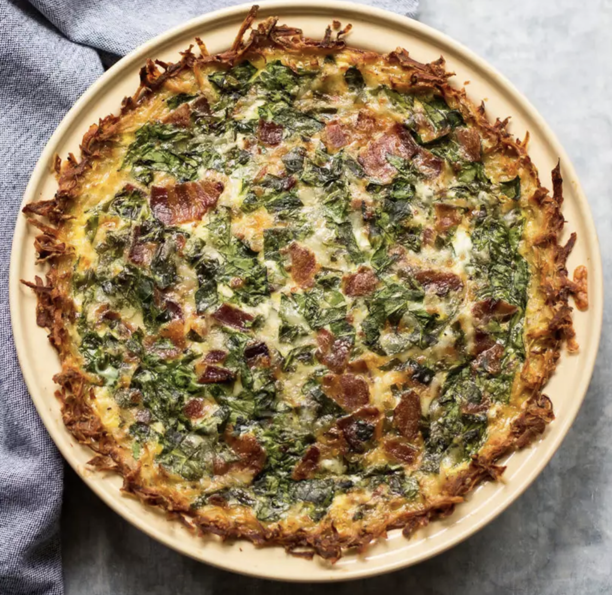

Spinach Bacon Quiche
- 0.5 lbs of cubed bacon
- 5 eggs
- 3/4 cups whole milk
- 8 oz spinach
- 1 8inch pie shell
- spices to taste
Instructions
- Preheat oven to 350oF.
- Cook cubed bacon over medium heat until crispy.
- Whisk eggs, whole milk, and spices in a large bowl until evenly combined.
- Combine bacon and spinach with the egg mixture.
- Pour final combined mixture into pie shell.
- Place in oven and cook for 50mins or until egg is set.